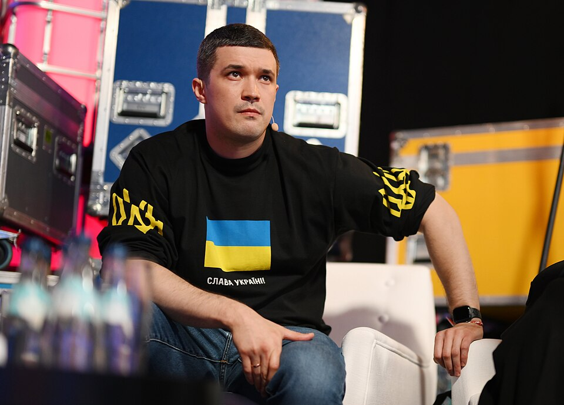
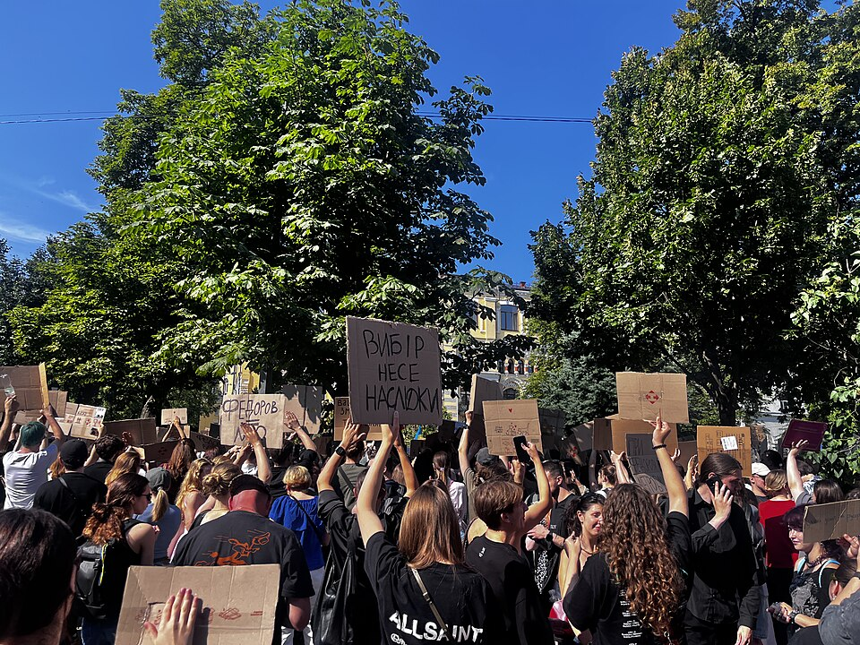

Es raro ver en Ucrania una crisis interna desde la invasión rusa de 2022. Tras aguantar el envite de la potencia militar, en 2026 el país europeo está consiguiendo devolver el golpe y poner a Rusia en una situación económica delicada tras los ataques a su estructura estratégica. Sin embargo, este mes hemos visto al descubierto grandes tensiones dentro del estado ucraniano.
La destitución del ministro de defensa Mijailo Fedorov el 15 de julio ha abierto la mayor crisis interna en Ucrania en lo que llevamos de año. La remodelación del gabinete ha provocado grandes movilizaciones en las calles y muestras de rechazo dentro del ejército. A pesar de los intentos del presidente Volodímir Zelenski de calmar las aguas, estas últimas semanas han dejado ver una profunda división en Kiev.
Las dos Ucranias
Mijailo Fedorov es un hombre joven, de 35 años, y sin experiencia militar. A principios de año se convirtió en el cuarto Ministro de Defensa del país desde que comenzó la guerra y su labor ha estado marcada por su avance en la ciberseguridad del país y por el desarrollo de drones para el conflicto bélico. Esto le convirtió rápidamente en una figura muy popular, pero le enfrentó a grandes nombres del ejército.

Mykhailo Fedorov en la Web Summit 2022 en Lisboa
Fuente: Web Summit
Oleksandr Syrskyi, Comandante en Jefe de las Fuerzas Armadas de Ucrania, es un hombre que realizó su formación militar cuando Ucrania aún formaba parte de la Unión Soviética. La exitosa defensa que realizó de Kiev en los primeros compases de la guerra le elevó a héroe nacional, pero sus tácticas militares de mentalidad soviética siempre han sido motivo de polémica en el país. Para Syrskyi la victoria en una batalla es lo más importante. Esto en numerosas ocasiones ha exigido tácticas muy arriesgadas con gran coste humano. Por ello, sus operaciones han sido tildadas de “sangrientas”, “suicidas” y en una ocasión Fedorov aseguró que estaban “dividiendo al país”. En un ejército en el que falta personal humano, el enfoque de Fedorov ganó apoyo: “Cuando la tecnología está en guerra, perdemos drones, no personas".
El choque entre ambas figuras del ejército llegó a un punto en el que fuentes aseguran que no eran capaces de comunicarse sin la intermediación de Zelenski. Todo el caos que esta situación causaba en el ejército ucraniano es la razón por la que este mes, aprovechando una remodelación más amplia del gabinete, decidió prescindir de Fedorov como Ministro de Defensa.
Forzando la mano del gobierno
"Ha sido un gran honor servir al pueblo ucraniano como ministro de Defensa", aseguró Fedorov cuando se hizo pública la noticia. La intención de mantener al popular empresario en el ejecutivo como consejero no consiguió convencer a sus partidarios quienes se echaron a las calles en las principales ciudades del país. Más de mil manifestantes en Kiev rodearon la oficina presidencial mientras figuras militares dimitieron en apoyo a Fedorov.
Zelenski aseguró que el objetivo de la decisión era buscar unidad e intentó recuperar a Fedorov ofreciéndole otro ministerio, pero el empresario expresó que solo aceptaría volver a ser ministro de Defensa. Con la presión aumentando, Zelenski destituyó a Syrskyi el 21 de julio y lo sustituyó por Mykhailo Drapatyi. Este cambio fue valorado positivamente por Fedorov, pero los manifestantes prometieron continuar hasta que el exministro de Defensa volviese a su cargo.
Según una encuesta de Rating Group, actualmente Fedorov (65%) contaría con un porcentaje de confianza mayor que Zelenski (54%). Este valor es considerablemente mayor que una semana antes de su destitución donde solo el 35% mostraba su confianza en el político.
Crisis cada vez más comunes

Manifestación contra la destitución de Fedorov. En el cartel se puede leer "Las decisiones tienen consecuencias".
Fuente: Getmanivna (Wikimedia)
Las protestas en Ucrania siguen siendo algo extraño de ver en tiempos de guerra, pero en los dos últimos años se han convertido en una ocurrencia más común. Durante el mismo mes del año pasado, Ucrania vivió las primeras manifestaciones masivas desde la invasión rusa. La razón fue la decisión de Zelenski de acabar con la independencia de los organismos anticorrupción en un contexto de aumento de los poderes del gobierno para combatir la influencia rusa. Las manifestaciones lograron revertir la medida, pero otro escándalo estalló a finales de año cuando varios ministros dimitieron por su implicación en la malversación de fondos vinculados a la empresa de energía nuclear estatal.
El ejecutivo de Zelenski sigue manteniendo gracias al ataque ruso un alto nivel de apoyo comparado con los demás líderes europeos, pero el gobierno cada vez se ve más afectado por sus escándalos. Lejos queda cuando en 2022 Zelenski contaba con una aprobación cercana al 90% mientras un número en aumento de ucranianos quieren un fin rápido y pactado al conflicto (66% en 2026 frente a 22% en 2022 según Gallup). Aunque militarmente Ucrania está cosechando éxitos, la figura que hace cuatro años unificó al país luce más frágil que nunca.